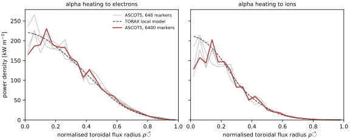

ASCOT5 production run: alpha heating from 6400 markers
Entry 12 left one ASCOT5 run to do. Its aim was to resolve where in radius the fusion alphas deposit their heat, which samples of 640 alphas could not do (see the Primer). The owner approved a third cluster job (OQ-13): 6400 alphas at the working orbit tolerance, with no per-alpha time limit, and the same 640 alphas run at that tolerance and ten times tighter, as a check. The job ran in under four hours on one node; every alpha either slowed down or left the plasma.
What it showed
The totals agree with the 640-alpha runs. ASCOT5’s alpha heating on TORAX’s grid, against TORAX’s local model, which deposits each alpha’s energy where it is born: 71.8 MW vs 70.5 MWC-064. The tighter tolerance changes the heating only slightly (electrons -0.16%, ions +0.08%C-066), so the working tolerance stands. Holding ASCOT5’s heating fixed in TORAX for two seconds, against holding TORAX’s own heating fixed: -0.009% in stored energy (central T_e +0.3%, T_e and T_i profiles 0.4% and 0.5%)C-067.
The run explained one open item. Earlier jobs found the alphas’ total birth power slightly higher than the fusion reaction rate implies (ceiling K-011). The alphas’ statistical weights add up to the reaction rate exactly, so the excess must be in their birth energies. We had assumed every alpha is born at the nominal energy; their mean is 3.573 MeV, 1.5% above 3.52 MeVC-063. That accounts for all of the excess. The smaller excesses reported in entries 10 and 12 came from samples of 640 alphas, which scatter more. Thermal motion of the reacting ions raises the mean birth energy. We have not yet checked whether it accounts for all of the shift; that stays open until neutral-beam ions are added.
The radial position is resolved in its averages. The heating lies slightly further out than in TORAX’s model: centroid 0.370 vs 0.362, half-power radius 0.331 vs 0.325C-065. Every sample shows it, the 6400-alpha run and all three 640-alpha samples.

What it did not show
The profile in the core is not resolved cell by cell. With ten times more alphas, the scatter between neighbouring cells near the axis should have fallen by about a factor of three. It did not, so the scatter does not come only from the number of alphas. The narrow radial bins near the axis are the likely cause; we have not tested it. This is a new ceiling (K-012). M1 uses ASCOT5’s totals, its electron/ion split and the averages of its shape, not its core profile cell by cell.
Two smaller findings are on the technical page. The energy accounting overshoots slightly; the tighter tolerance does not remove that. The job’s provenance files recorded the wrong commit: the job ran from a working copy that received new commits while it ran, and the commit was read when each file was written. That is fixed, and a test now covers it.
Cluster job 2287778 (one node, 64 threads), ASCOT5 5.6.4, alphas generated by tkit ascot-alpha at commit fcd8ce5 (the job log; its provenance files record 2138b3c, see above), config hash 30ffe57c, seed 0, tier A, 2026-10-01. TORAX restarts by tkit ascot-apply at 2138b3c plus the changes in this entry, TORAX 1.4.3, JAX 0.10.2, Python 3.11.7, float64, 2026-10-02. Figure: blog/figures/make_ascot_alpha_profile.py; data in ascot_alpha_profile.csv.
Where this stands: M1 is closed, with no follow-up outstanding. K-011 and K-012 are open ceilings for the neutral-beam work. M2 waits on the owner’s inputs.
Technical details → Backends: ASCOT5 production run · Decision → OQ-13
Technical details → Backends › ascot5 production
Decisions → OQ-13